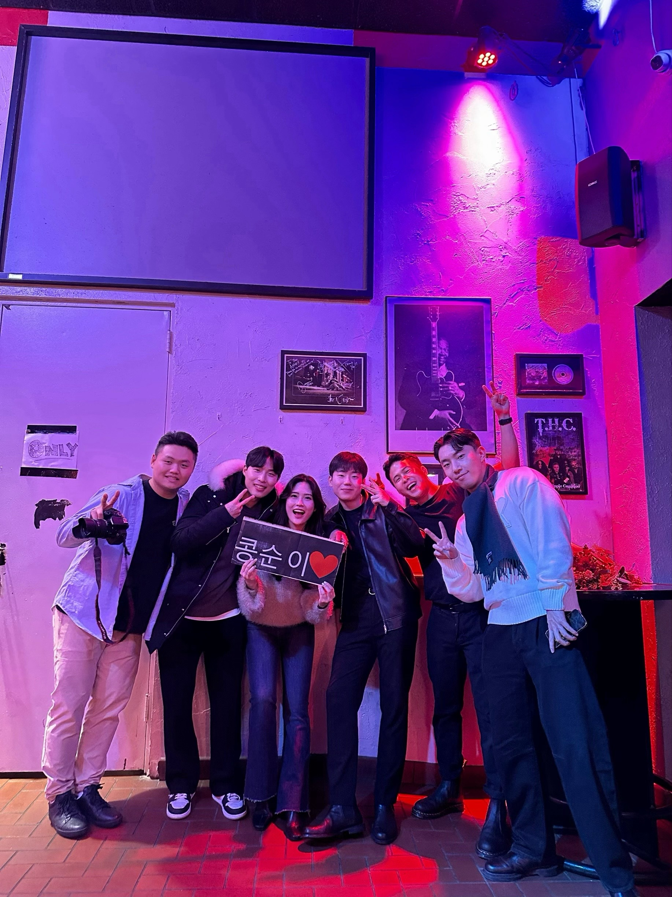
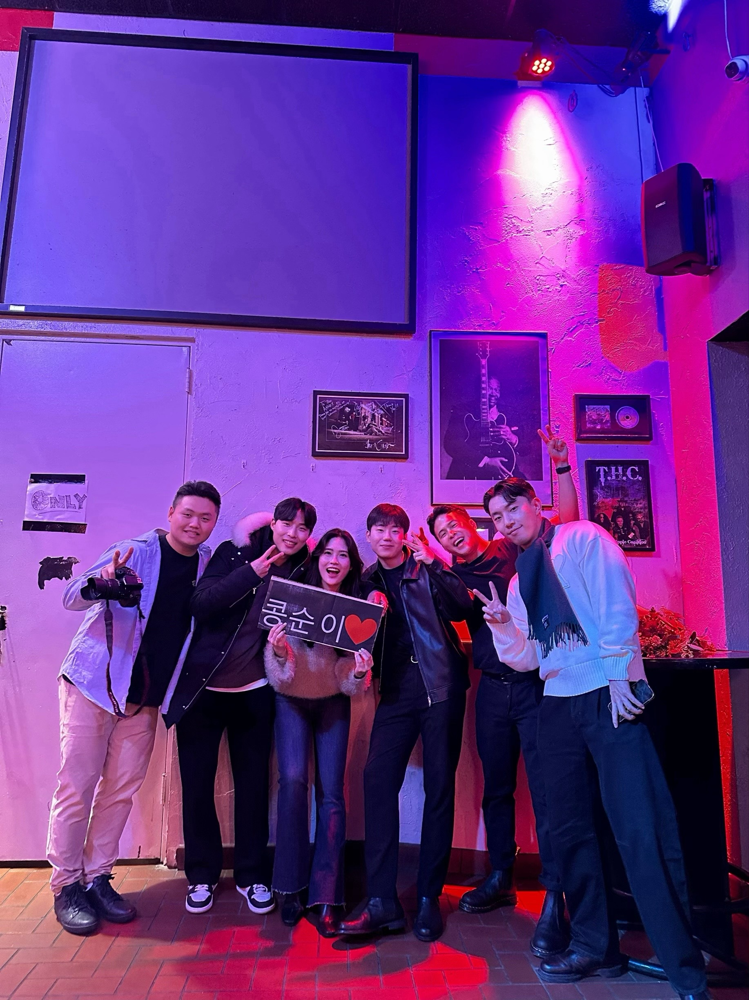

The Joy of Singing
Singing for me is more than just a hobby; it's a way of expressing my innermost emotions, a bridge that connects my soul to the audience. Being a proud member of the band club "Unikists" has given me a platform to not only refine my vocal skills but also to forge deep connections with like-minded individuals who share a passion for music. Every semester, we come together to perform at a concert, an event that I eagerly anticipate. These performances are exhilarating moments where I feel truly alive, basking in the spotlight and the energy of the crowd. Singing allows me to tell stories, evoke emotions, and create unforgettable memories, making every concert a new adventure. It's through these moments on stage with the Unikists that I've discovered the profound joy and fulfillment that come from sharing my voice with the world.
Benefits of Singing
- Improves mental well-being
- Enhances lung function
- Strengthens the immune system
 
